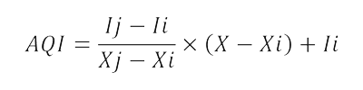

ดัชนีคุณภาพอากาศ (Air Quality Index : AQI) เป็นการรายงานข้อมูลคุณภาพอากาศในรูปแบบที่ง่ายต่อความเข้าใจของประชาชนทั่วไป เพื่อเผยแพร่ประชาสัมพันธ์ให้สาธารณชนได้รับทราบถึงสถานการณ์มลพิษทางอากาศในแต่ละพื้นที่ว่าอยู่ในระดับใด มีผลกระทบต่อสุขภาพอนามัยหรือไม่ ดัชนีคุณภาพอากาศ 1 ค่า ใช้เป็นตัวแทนค่าความเข้มข้นของสารมลพิษทางอากาศ 5 ชนิด ได้แก่
เกิดจากการเผาไหม้ทั้งจากยานพาหนะ การเผาวัสดุการเกษตร ไฟป่า และกระบวนการอุตสาหกรรม
เกิดจากการเผาไหม้เชื้อเพลิง การเผาในที่โล่ง กระบวนการอุตสาหกรรม การบด การโม่ หรือการทําให้เป็นผงจากการก่อสร้าง
มีอยู่ทั่วไปในธรรมชาติ หรือเกิดจากการกระทำของมนุษย์ เช่น การเผาไหม้เชื้อเพลิงต่างๆ อุตสาหกรรมบางชนิด
เกิดจากการเผาไหม้ที่ไม่สมบูรณ์ของเชื้อเพลิงที่มีคาร์บอนเป็น
เกิดขึ้นได้ทั้งในระดับบรรยากาศชั้นที่สูงจากผิวโลก และระดับชั้นบรรยากาศผิวโลกที่ใกล้พื้นดิน ก๊าซโอโซนที่เป็นสารมลพิษทางอากาศคือก๊าซโอโซนในชั้นบรรยากาศผิวโลก
ดัชนีคุณภาพอากาศของประเทศไทยแบ่งเป็น 5 ระดับ คือ ตั้งแต่ 0 ถึง 201 ขึ้นไป ซึ่งแต่ละระดับจะใช้สีเป็นสัญญลักษณ์เปรียบเทียบระดับของผลกระทบต่อสุขภาพอนามัย โดยดัชนีคุณภาพอากาศ 100 จะมีค่าเทียบเท่ามาตรฐานคุณภาพอากาศในบรรยากาศโดยทั่วไป หากดัชนีคุณภาพอากาศมีค่าสูงเกินกว่า 100 แสดงว่าค่าความเข้มข้นของมลพิษทางอากาศมีค่าเกินมาตรฐานและคุณภาพอากาศในวันนั้นจะเริ่มมีผลกระทบต่อสุขภาพอนามัยของประชาชน
| AQI | PM2.5 (มคก./ลบ.ม.) |
PM10 (มคก./ลบ.ม.) |
O3 (ppb) |
CO (ppm) |
NO2 (ppb) |
|---|---|---|---|---|---|
| เฉลี่ย 24 ชั่วโมงต่อเนื่อง | เฉลี่ย 8 ชั่วโมงต่อเนื่อง | เฉลี่ย 1 ชั่วโมง | |||
| 0 - 25 | 0 - 25 | 0 - 50 | 0 - 35 | 0 - 4.4 | 0 - 60 |
| 26 - 50 | 26 - 37 | 51 - 80 | 36 - 50 | 4.5 - 6.4 | 61 - 106 |
| 51 - 100 | 38 - 50 | 81 - 120 | 51 - 70 | 6.5 - 9.0 | 107 - 170 |
| 101 - 200 | 51 - 90 | 121 - 180 | 71 - 120 | 9.1 - 30.0 | 171 - 340 |
| มากกว่า 200 | 91 ขึ้นไป | 181 ขึ้นไป | 121 ขึ้นไป | 30.1 ขึ้นไป | 341 ขึ้นไป |
สูตรการคำนวณค่า AQI
AQI = ค่าดัชนีย่อยคุณภาพอากาศ
X = ความเข้มข้นของสารมลพิษทางอากาศจากการตรวจวัด
Xi , Xj = ค่าต่ำสุด, สูงสุด ของช่วงความเข้มข้นสารมลพิษที่มีค่า X
Ii , Ij = ค่าต่ำสุด, สูงสุด ของช่วงดัชนีคุณภาพอากาศที่ตรงกับช่วงความเข้มข้น X
จากค่าดัชนีย่อยที่คำนวณได้ สารมลพิษทางอากาศประเภทใดมีค่าดัชนีสูงสุด จะใช้เป็นดัชนีคุณภาพอากาศ (AQI) ณ ช่วงเวลานั้น
1.ให้อยู่ภายในบ้านเรือน หากไม่จำเป็น ไม่ควรออกนอกบ้าน
2.ปิดประตูหน้าต่างบ้าน ให้มิดชิด หมั่นทำความสะอาดบ้านโดยใช้ผ้าชุบน้ำเช็ดทำความสะอาดบ้านอย่างสม่ำเสมอ เพื่อลดปริมาณสะสมของฝุ่นละอองขนาดเล็ก
3.หากต้องออกข้างนอก ควรสวมหน้ากากที่สามารถป้องกันฝุ่นละอองขนาดเล็กได้
4.หลีกเลี่ยงการออกกำลังกาย หรือการทำงานหนัก
5.ผู้ป่วยกลุ่มเสี่ยง ผู้สูงอายุ ผู้หญิงตั้งครรภ์ และเด็กเล็ก ควรหลีกเลี่ยงการสัมผัสอากาศที่มีฝุ่นละออง
6.ไม่เผาขยะ โดยเฉพาะขยะที่เป็นสารพิษ เช่น พลาสติก ยางรถยนต์ รวมถึงการเผาทางการเกษตรกรรม
7.ลดการใช้รถยนต์ หรือใช้เท่าที่จำเป็น เพื่อไม่ให้มลพิษจากท่อไอเสียทำให้คุณภาพอากาศแย่ลง ส่วนกรณีที่ขับขี่ยานพาหนะในช่วงที่มีหมอกควันมาก ทัศนะวิสัยไม่ดี ควรเปิดไฟหน้ารถ เพื่อป้องกันอุบัติเหตุ